4.1 Area by Sums
Introduction
-
The rate of change of the population (in thousands of people per year) of Sevier County Tennessee between 2010 and 2022 can be modeled by
$p(t)= \begin{cases} 0.89 & 0\leq t\leq 10 \\ -0.45 & 10 \lt t \leq 12\\ \end{cases} $ where t represents the number of years since 2010.
- Sketch a graph of the rate of change function.
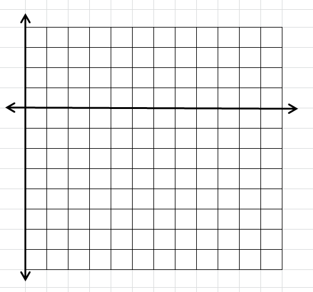
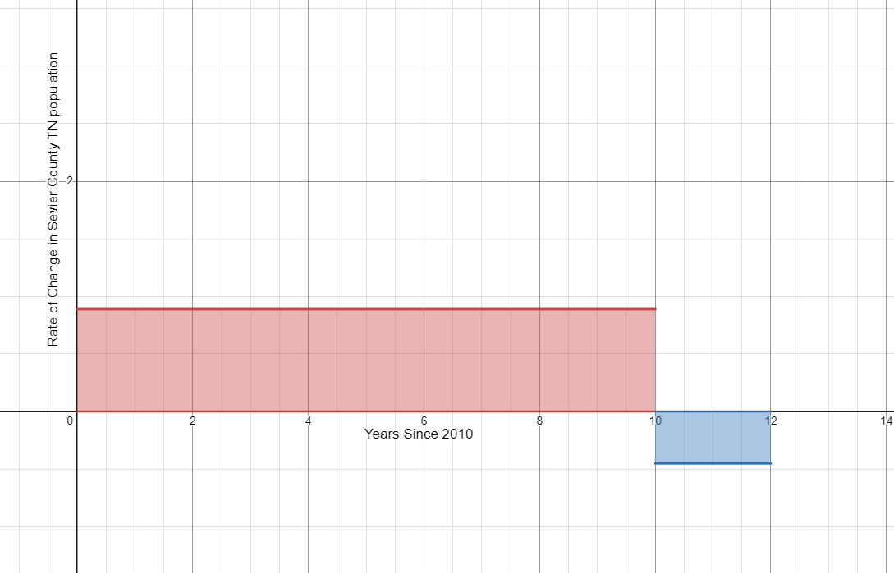
- Find the area of the region between the graph of p and the horizontal axis from 0 to 10. Interpret your answer.
$A=lw$
$A=0.89(10)$
$A=8.9$
There was a 8.9 thousand person increase in population between 2010 and 2022.
- Find the area of the region between the graph of p and the horizontal axis from 10 to 12. Interpret your answer.
$A=lw$
$A=-0.45(2)$
$A=-0.9$
There was a 0.9 thousand person decrease in population between 2020 and 2022.
- Was the population of Sevier County in 2022 greater or less than the population in 2010? By how much did the population change between 2010 and 2022?
$8.9-0.9=8$
In 2022 the population of Sevier County was 8 thousand people more than in 2010.
- What information would you need to determine the population of Sevier County in 2022?
We need to know the population of Sevier County in 2010. If we know the population count for 2010, we can calculate the population in 2022 by adding 8,000 to the 2010 population count.
- What is the relationship between the area of the regions and the population of Sevier County?
Each area represents the total change in population for the time period.
- Sketch a graph of the rate of change function.
-
Estimate the area under the curve $f(x) = {x^2}$ on the domain [0,4] by summing the areas of the four Right Hand Rectangles. Is your estimate greater than the actual area or less than the actual area?
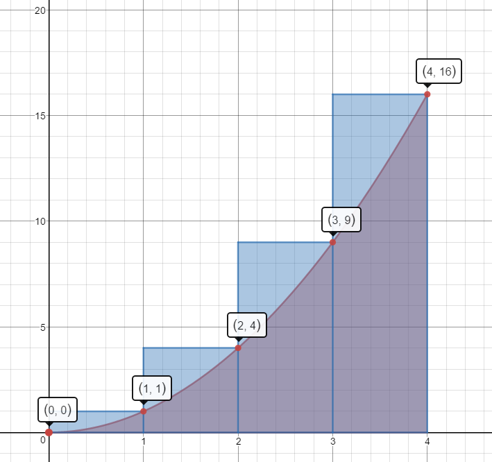
$A\approx 1(1)+1(4)+1(9)+1(16)=1+4+9+16=30\;units^2$
This estimate is more than the actual area.
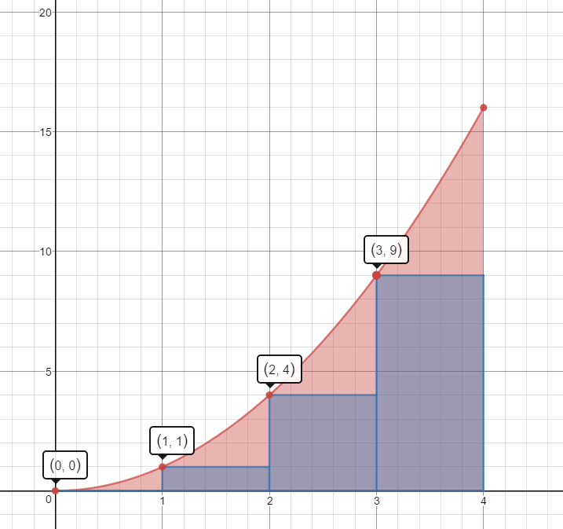
Left Hand Rectangles
$A\approx1(0)+1(1)+1(4)+1(9)=0+1+4+9=14\;units^2$
This estimate is less than the actual area.
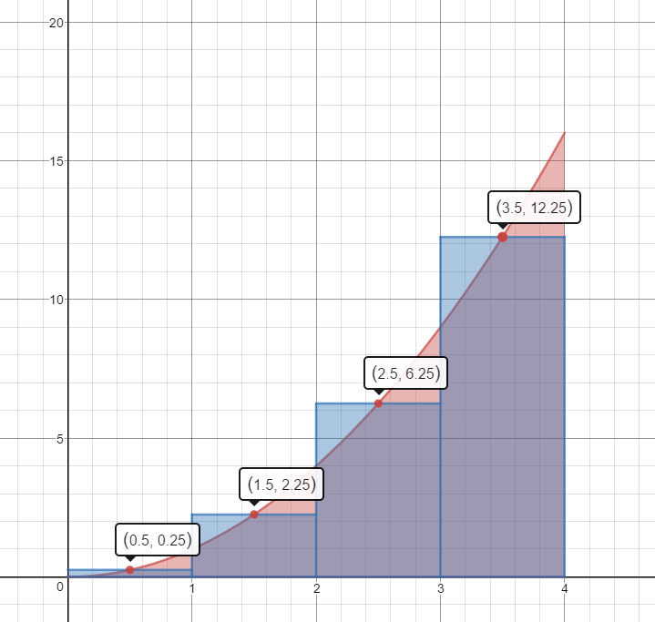Mid-Point Rectangles
$A\approx 1(.25)+1(2.25)+1(6.25)+1(12.25)=.25+2.25+6.25+12.25=21\;units^2$
This estimate is slightly less than the actual area.
-
Use 3 Right Hand Rectangles to estimate the area under the curve $f(x) = 2x$ on the domain [1,4].
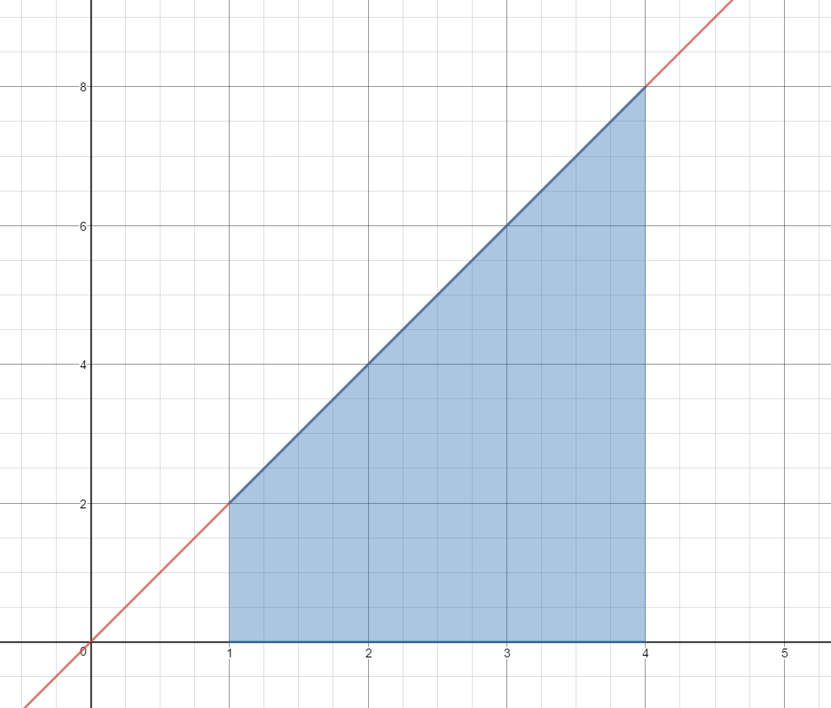$A\approx1(4)+1(6)+1(8)$
$A\approx4+6+8$
$A\approx 18\;units^2$
Is this estimate less than the actual area or greater than the actual area?
This estimate is more than the actual area.
-
Use 3 Mid-Point Rectangles to estimate the area under the curve $f(x) = {x^3}$ on the domain [1,4].
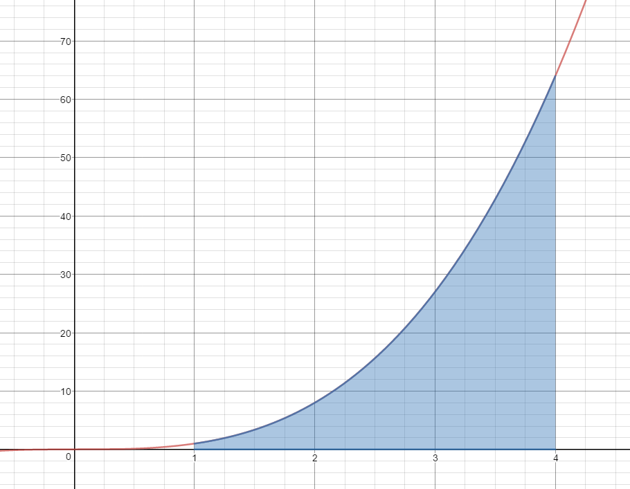$A\approx 1{(1.5)^3} + 1{(2.5)^3} + 1{(3.5)^3}$
$A\approx 3.375 + 15.625 + 42.875$
$A\approx 61.875\;units^2$
Is this estimate less than the actual area or greater than the actual area?
This estimate is less than the actual area.
-
Use 3 Left Hand Rectangles to estimate the area under the curve $f(x) = \frac{1}{x}$ on the domain [0.5, 2.0].
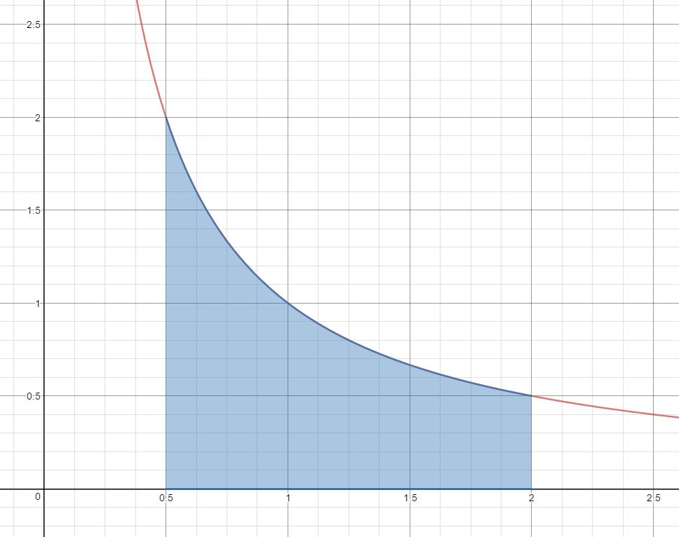$A\approx \frac{1}{2}\left( {\frac{1}{{.5}}} \right) + \frac{1}{2}\left( {\frac{1}{1}} \right) + \frac{1}{2}\left( {\frac{1}{{1.5}}} \right)$
$A\approx \frac{1}{2}(2) + \frac{1}{2}(1) + \frac{1}{2}\left( {\frac{2}{3}} \right)$
$A\approx 1 + \frac{1}{2} + \frac{1}{3}$
$A\approx 1.83\;units^2$
Is this estimate less than the actual area or greater than the actual area?
This estimate is greater than the actual area.
-
A person walking along a straight path has her velocity in miles per hour at time t given by the function $$v(t)=0.25{{t}^{3}}-1.5{{t}^{2}}+3t+0.25,$$ for times in the interval $0\le t\le 2$. The graph of this function is also given in each of the three diagrams below.
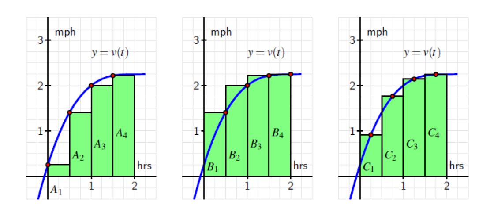- Estimate the area under each of the curves by summing the areas of the rectangles.
Left Rectangles: $A_1+A_2+A_3+A_4$
$.5(.25)+.5(1.4063)+.5(2)+.5(2.2188)=2.93755$
Right Rectangles: $B_1+B_2+B_3+B_4$
$.5(1.4063)+.5(2)+.5(2.2188)+.5(2.25)=3.93755$
Midpoint Rectangles: $C_1+C_2+C_3+C_4$
$.5(.91)+.5(1.7617)+.5(2.1445)+.5(2.2461)=3.53115$
- Why are the three answers different?
Each estimates the area under the curve using different size rectangles.
- Of the three estimates from part a, which do you think is the best approximation of the area under the curve?
Using midpoints gives the best approximation.
- How could you get a better approximation for the area under the curve?
We would get a better approximation if we used more rectangles.
- What does the area under the curve represent?
The area under the curve represents the total distance walked: $\frac{miles}{hour}\ast hour=miles.$
Source: Active Calculus by Matthew Boelkins is licensed under a Creative Commons Attribution-NonCommercial-ShareAlike 4.0 International License. Based on a work at http://scholarworks.gvsu.edu/books/10/.
- Estimate the area under each of the curves by summing the areas of the rectangles.
-
Given the function $f(x)=4-0.16{{x}^{2}}$,
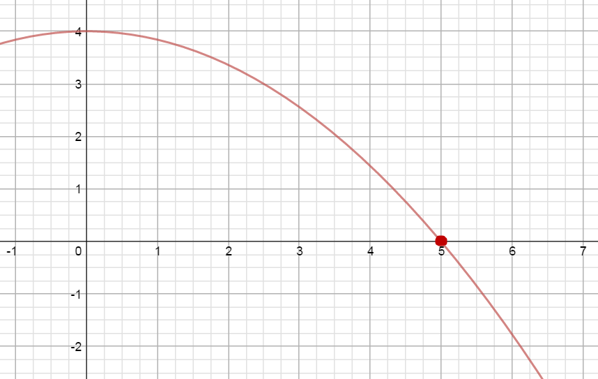 approximate the area under the curve on the interval [0, 6] using 6 right rectangles.$A \approx 1[f(1)]+1[f(2)]+1[f(3)]+1[f(4)]+1[f(5)]+1[f(6)]$
$A \approx 1(3.84)+1(3.36)+1(2.56)+1(1.44)+1(0)+1(-1.76)$
$A\approx 9.44\;unit{{s}^{2}}$
-
The rate of change of per capita consumption of a certain type of cheese in the United States from 1982 through 2002 can be modeled as $$C'\left( x \right)=-0.0011{{x}^{2}}+0.02x+0.2399$$ pounds per person per year where $x$ is the number of years since 1970.
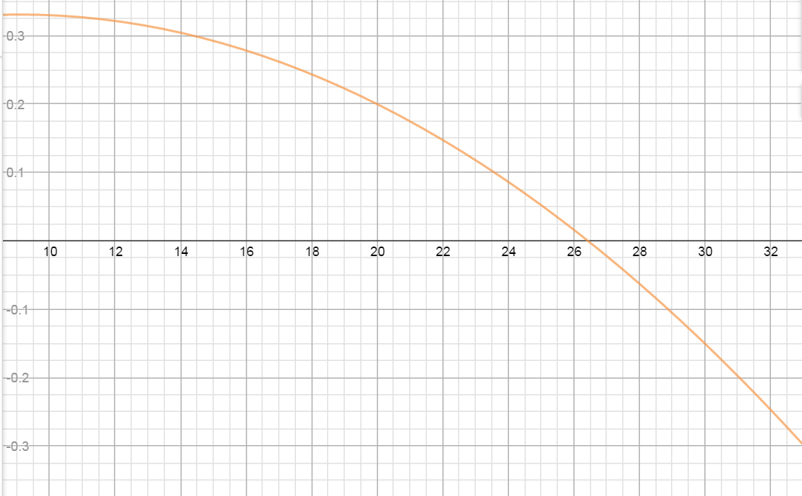- According to the graph of $C'(x)$, when was the per capita consumption of this cheese growing and when was it declining?
Growing: 1982 to about half way thru 1996
Declining: mid-1996 through 2002
- Find the point of the graph of $C'(x)$ that corresponds to the time when the per capita consumption of this cheese, $C(x)$, was the greatest. Explain.
Per capita consumption greatest at $x=26.43$ years or sometime in 1996
- Estimate using 7 right rectangles the area lying above the x-axis and below the graph of $C'(x)$ over the interval in part a. Interpret your answer.
$A\approx2(.0343)+2(.2783)+2(.2435)+2(.1999)+2(.1475)+2(.0863)+2(.0163)=2.5522$
Total per capita consumption of this cheese grew by 2.5522 pounds per person from 1982 to mid 1996.
- Estimate using 3 right rectangles the area lying below the x-axis and above the graph of $C'(x)$ over the interval in part a. Interpret your answer.
$A\approx 2(-.0625)+2(-.1501)+2(-.2465)=-.9182$
Total per capital consumption of this cheese decreased by .9182 pounds per person from mid 1996 to 2002.
- By how much did the per capita consumption of this cheese change between 1982 and 2002?
$2.5522-.9182=1.634$
Per capita consumption of this cheese grew by 1.634 pounds per person from 1982-2002.
- What information do we need to determine the per capita consumption of this cheese in 2002?
We would need the actual per capita consumption in 1981 in order to determine the per capita consumption for any other year in the domain of the function.
- According to the graph of $C'(x)$, when was the per capita consumption of this cheese growing and when was it declining?